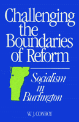

A case study of the achievements and failures of Bernard Sanders’ radical administration in Burlington, VT
A case study of the achievements and failures of Bernard Sanders’ radical administration in Burlington, VT


 A case study of the achievements and failures of Bernard Sanders’ radical administration in Burlington, VT
A case study of the achievements and failures of Bernard Sanders’ radical administration in Burlington, VT

|  |
Challenging the Boundaries of ReformSocialism in BurlingtonW. J. Conroycloth EAN: 978-0-87722-702-1 (ISBN: 0-87722-702-0) |
"Conroy has made a significant contribution to the literature on progressive city governments, the ongoing debate over left social science, and current interest in post-Enlightenment utopianism."
—Journal of Politics
Recently, after eight years in office, the socialist mayor of Burlington, Vermont, Bernard Sanders, stepped down. This is a case study of the achievements and failures of Sanders’ radical administration—amidst a conservative trend nationally, an unsympathetic state government, and a hostile city council. W. J. Conroy analyzes the reforms that Burlington’s radicals attempted. He identifies four questions regarding Burlington’s experience that resonated beyond the city’s boundaries and are addressed in this book: How much autonomy did local government possess? Were the needs and constraints of the business community the primary forces that circumscribed local autonomy? Did the non-economic demands of the new social movements (Burlington’s ecologists, peace activists, and gays and lesbians) face different constraints than did the economic reforms and thus have a greater chance for enactment? What lessons can be drawn from the case of Burlington that would aid the American left in its struggle to capture both government and civil society?
Through several case studies, Conroy documents the frustration that Sanders and the progressive Coalition endured over issues such as waterfront development, the building of the four-lane Southern Connector, and alternate sources of taxation. He analyzes the economic development, tax, foreign affairs, and gender policy initiatives of Burlington’s left from a post-Marxist perspective and he offers a controversial localist strategy to revitalize the American left.
W. J. Conroy is Assistant Professor of Political Science at Kentucky Wesleyan College.
Political Science and Public Policy
Sociology
Conflicts in Urban and Regional Development, edited by John R. Logan and Todd Swanstrom.
Conflicts in Urban and Regional Development, edited by John R. Logan and Todd Swanstrom, includes books on urban policy and issues of city and regional planning, accounts of the political economy of individual cities, and books that compare policies across cities and countries.
© 2015 Temple University. All Rights Reserved. This page: http://www.temple.edu/tempress/titles/608_reg.html.